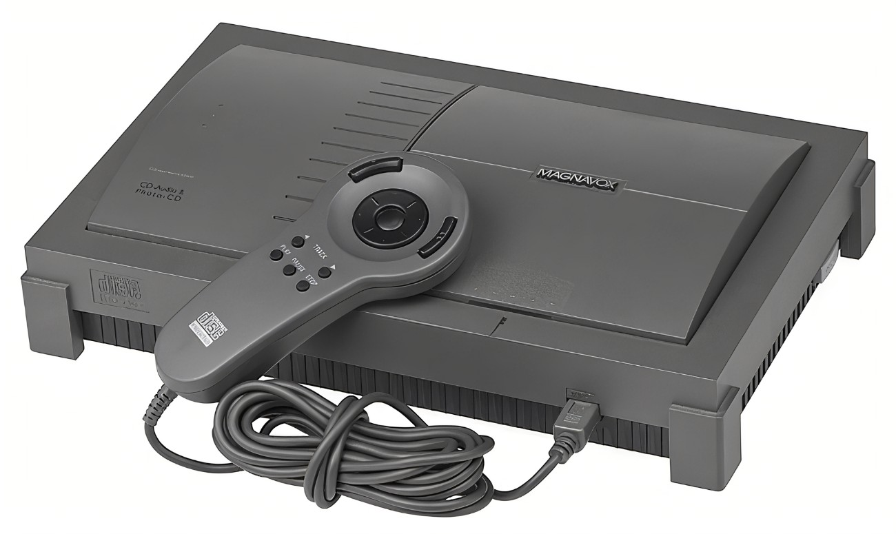
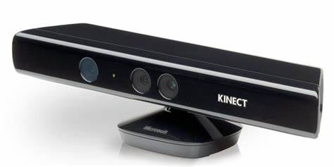
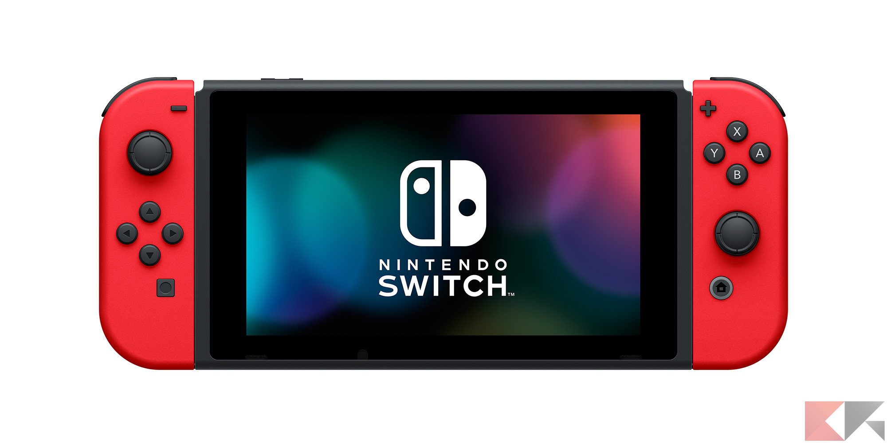

O primeiro Sistema Operacional foi o "GM-NAA I/O", criado pela General Motors, foi um sistema operacional da IBM 704, o objetivo era automatizar várias atividades sem ter que reenviar constantemente códigos bases para fazer uma determinada função, além de que era melhor em gerenciar os recursos do equipamento. Com o passar do tempo, diversas empresas desenvolveram Sistemas Operacionais para seus "MainFrames" (Frames principais), algumas se especializaram na criação de sistemas para terceiros. O problema é que cada um apresentava características próprias e não possuíam nenhuma comunicação entre si, criando a necessidade, aos poucos, de uma padronização.
Em 1960, a IBM criou um Sistema Operacional denominado como OS/360, para uma Máquina denominada como system/360. Várias versões do OS/360 foram desenvolvidos, conforme as versões da sua máquina, algumas versões posteriores desse Sistema Operacional até receberam outros nomes e arquiteturas de terceiros. O fato é que a IBM não foi a única a lançar Sistemas Operacionais, outras organizações, principalmente as universidades (ou em acordos com essas), começaram a fazer novos sistemas, como o SCOPE, MACE, NOS, entre outros.
Sem dúvida, o mais famoso dos Sistemas Operacionais para MainFrames, foi EXEC, para o UNIVAC (UNIVersal Automatic Computer). Um computador que fez muito sucesso entre os anos 50 e 60, principalmente por serem considerados pequenos (para a época) e mais baratos (chegando até a versões que tinham o tamanho de apenas algumas geladeiras). Dessa forma, esses computadores acabaram por ser mais acessíveis a universidades e pequenas empresas.

Porém, a História do Sistema Operacional que utilizamos hoje, em microcomputadores, está ligada totalmente a história da computação pessoal, em especial, ao que foi considerado o primeiro PC: o Altair 8800.
Criado com uma das primeiras linhas de microprocessadores da intel, o Altair 8800, foi um microcomputador onde você precisava programar subindo e descendo chaves. Na prática, ele era um kit, e não realmente um computador, destinado a hobbystas. Porém, essa máquina era praticamente inútil, até que Bill Gates e Paul Allen tiveram a ideia de pegar uma dessas máquinas e portar o BASIC(linguagem de programação) para essa máquina, criando o que ficaria conhecido como Microsoft-BASIC.
Os primeiros microcomputadores não rodavam realmente Sistemas Operacionais, mas algo bem próximo a esses, denominados de interpretador. Eles rodavam comandos de programação, compilava e executava. Não demorou muito até que a ideia de Sistemas Operacionais, já usada em MainFrames, viesse aos microcomputadores. Afinal, carregar sempre um programa, sem sistema de arquivos, não era algo fácil, e os disquetes estavam começando a se tornar uma realidade.
Voltando um pouco no tempo, de volta a metade dos anos 60, houve um grande esforço de uma parceria entre o MIT, general Eletronics e da AT&T para a criação de um Sistema Operacional: o Multics. O problema é que até o final da década, não foi acabado. Por conta de incertezas na busca pelo resultado e na não-convergência dos desejos de implementação de seus criadores, o Multics acabou sendo descontinuado. Porém, em 1969, Ken Thompson, um dos responsáveis pelo projeto, utilizou o seu conhecimento para uma versão menos ambiciosa, denominada então de Unics e, posteriomente, rebatizado como Unix.
Em 1973, o Unix foi reescrito em linguagem C (antes era escrito em Assembly), pelo próprio Ken Thompson e por Dennis Richie (criador da linguagem C). Mais tarde, o Unix começou a ser usado como base para outros Sistemas Operacionais, principalmente seu núcleo (kernel), criando assim uma série de derivados. Em especial, podemos destacar o Berkeley Software Distribution, ou BSD. Dessa Série de derivados começou-se a criar a família de Sistemas Operacionais unix ou ix, dos quais veio o POSIX, MINIX, FreeBSD, Solaris, dentre outros, mas ainda não foi agora que o Linux surgiu
Os Sistemas Operacionais para desktop
Voltando aos microcomputadores, logo depois do Altair, diversos equipamentos começaram a surgir, com destaque ao Apple II. O Apple II possuía um interpretador BASIC, mas não apenas isso, foi criado pela Apple o Apple DOS. O nome DOS veio do termo Disk Operating System (guardem esse nome), que teve outros derivados, da própria Apple, com o passar do tempo. O fato é que o mercado da Apple crescia cada vez mais na área de computadores pessoais, e a IBM, grande detentora da venda de MainFrames. resolveu criar um novo computador. Com uma oferta até então inédita para a companhia, eles criaram o PC-IBM, usando peças de terceiros para compor o computador. Porém. eles precisavam de um Sistema Operacional, e é assim que a história muda.
A IBM precisava de um Sistema Operacional para poder vender seu novo computador, porém não tinha tempo para fazer. Afinal, a Apple já estava em alta, e o mercado estava dificil. Dessa forma, a IBM precisava comprar um Sistema Operacional já pronto, foi quando Wiliam Gates II fez uma recomendação para os advogados, e outros responsáveis pela IBM, sobre a empresa de seu filho, a Microsoft, já conhecida por portar o BASIC para o Altair e desenvolver alguns programas para Apple II.
Porém, a Microsoft não tinha Sistema Operacional, então Bill Gates (Wiliam Gates III), sócio fundador da Microsoft, ligou para a maior empresa de Sistemas Operacionais da época, a Digital Researchs, de Gray Kildall, desenvolvedora do CP/M. infelizmente, a companhia não deu a atenção devida aos representantes da IBM, não finalizando nenhum acordo com a Big Blue (apelido da IBM). Então, a IBM voltou á Microsoft. Então, Bill Gates não perdeu a oportunidade. Steve Ballmer, um dos três fundadores da Microsoft, soube de uma empresa que criou um Sistema Operacional simples, mais muito funcional. A Seattle Computer havia criado um Sistema chamado QDOS, ou Quick and Dirty Operating System (Rápido e Sujo Sistema Operacional), baseado na tecnologia x86, dos processadores da intel. Estima-se que esse Sistema Operacional tenha sido comprado por 40 mil Dólares, porém isso é incerto, esse Sistema foi adaptado e apresentado a IBM pela alcunha de MS-DOS (Microsoft Disk Operating System).
Fechando o acordo com a IBM, a única exigência da Microsoft era que os direitos de revenda do DOS fosse ser dela. A IBM não se preocupou com isso, afinal, na época, cada Sistema Operacional era único para um computador, por questão de arquitetura, algo qu fez a IBM se arrepender, em 1982, por causa de uma empresa chamada Compaq que fazia engenharia reversa.
A Compaq contratou vários engenheiros (que afirmaram nunca ter trabalhado na IBM) que pegaram o computador da Big Blue e, ao ver como ele funcionava, perceberam que era uma amálgama de peças de outros fabricantes, assim, eles desenvolveram um computador Compaq PC, conhecido como IBM-PC Compatível. Dessa forma, todos os programas que pegavam no IBM-PC já funcionariam no novo computador da Compaq, incluindo o MS-DOS. Essa ideia fez surgir uma série de computadores compatíveis com IBM-PC, e muito mais barato, criando um mercado forte e altamente competitivo, o que resultou na queda das vendas do Apple II.
O início da Interface Gráfica
Em 1979, todo mundo esperava alguma novidade da Apple. A IBM estava ainda longe de lançar o PC-IBM, e a Apple praticamente tinha um monopólio no mercado de computadores pessoais com seu Apple II. na época, a Xerox possuía um foco em pesquisas chamado de PARC (Palo Alto Research Center). Em troca de poder comprar ações, a Xerox abriu suas instalações de pesquisas para a Apple. Steve jobs, CEO(Chefe Executivo de uma Empresa) da Apple na época, e outros Executivos e engenheiros, foram até o PARC e lhes foram apresentados algumas tecnologias interessantes, como a Ethernet e a Linguagem Orientada a Objetos. Porém, o que realmente impressionou os visitantes foi uma versão bem arcaica de uma interface gráfica, com um dispositivo chamado Mouse, que estava ligado a um computador. Isso foi importante para poder criar o primero Sistema Operacional com interface gráfica, o Lisa OS, para o Apple Lisa.
Com o avanço da IBM no mercado de computadores pessoais e, posteriomente de clones, a Apple precisava lançar algo novo no mercado. O IBM era mais barato e completo do que o Apple II. O Lisa estava ficando muito caro e a diretoria da Apple resolveu que estava na hora de Jobs procurar outro projeto. Caminhando pelas instalações da Apple, ele encontrou um projeto destinado a computadores de baixo custo, o Macintosh. Rapidamente, Jobs afastou jef Raskin (então criador da ideia) e assumiu o projeto Macintosh, mudando seu conceito, porém querendo manter a parte de interação humano-máquina.
O Macintosh foi criado para ter um Sistema Operacional revolucionário, com interface gráfica, chamada de MacOS (hoje conhecido como MacOS Classic). Durante o desenvolvimento do MacOS, diversos desenvolvedores foram chamados para criar programas para ele. Uma das empresas chamada foi a a Microsoft, que usou o acesso antecipado ao MacOS para criar não um Sistema Operacional ainda, mas uma GUI, Interface Gráfica do Utilizador.
Quando foi criado, o Windows ainda não era um Sistema Operacional, mas sim uma interface gráfica para o MS-DOS. O Windows só se tornaria realmente um Sistema Operacional, com núcleo próprio, com a vinda do Windows NT.
No começo, o Macintosh foi um fracasso, que só veio se recuperar anos mais tarde com o advento do PostScript pela Adobe, mas essa já é uma outra história.
O fato é que pelo Macintosh ser muito caro, os PC-IBM e compatíveis começaram a ganhar mais e mais no mercado, e, com isso, a Microsoft começou a ter uma liderança absoluta de mercado.
Surge o Linux
Em 1991, Linus Torvalds lançou a primeira versão de um núcleo de Sistema Operacional denominado de Linux. Diferente do que é divulgado por muitas pessoas, o Linux não é feito em cima do Unix. O Linux foi escrito do zero, inspirado pelo Minix (esse era um sistema Unix). Torvalds dizia querer criar "um Minix melhor que o Minix". Porém, este tinha o objetivo de ser simples, mas ainda sim, ser compatível com a grande maioria dos aplicativos para Unix.
Mas, a ideia de linus Torvalds era divulgar e abrir o código para que diversas pessoas pudessem ajudar. Com ajuda de diversos outros programadores, a versão 0.02 do núcleo finalmente ficou pronta. Pouco depois, Linus Torvald colocou seu núcleo sobre a licença GNU (GNU Is Not Unix - significa GNU Não É Unix), que foi um Sistema Operacional, desenvolvido para ser compatível com o Unix, porém sem ter o código fonte do Unix.
O GNU era um projeto de Sistema Operacional sem núcleo e o Linux era um núcleo de Sistema Operacional sem bibliotecas e funções atreladas. Ao atribuir a licença GNU ao Linux, foi criado o GNU/Linux. Sistema Operacional base para diversas distribuições que surgiram depois
Resumindo, o linux não é Unix, é um núcleo de Sistema Operacional, que, unido ao GNU, criou o GNU/Linux. tanto o GNU quanto o Linux foi criado com o objetivo de ser mais simples que o Unix, porém com a compatibilidade para a maioria dos aplicativos Unix.
Segundo a licença GNU, qualquer software que a utilize não pode ser fechado. isto é, tudo deve ser código aberto, disponível para editar o código e fazer o que quiser com ele. Porém Software livre não quer dizer Software gratuito. É possivel até vender o Software, todavia o vendedor deve enviar o código fonte junto e não apenas o executável compilado.
Com o tempo a divulgação do GNU/Linux, diversas distribuições, baseados neste, foram lançadas. Essas novas versões adicionavam sistemas de janelas, compatibilidade com outros sistemas de arquivos, bibliotecas para determinadas funções, pacotes exclusivos, entre outros. Essas distribuições eram criadas por terceiros, algumas por governos, outras por empresas que queriam algo mais personalizado para dar foco em uma determinada tarefa. Muitas dessas distribuições também foram criadas por grupos que tinham o interesse de criar sistemas cada vez melhores e mais completos.
As distribuições linux mais conhecidas hoje são:
Linux Mandrive

Linux Ubuntu
Linux CentOS
Linux Solus
Arch Linux
Linux Fedora
SUSE Linux
Cada uma com um objetivo e objetivo diferente. É muito comum, também, uma distribuição Linux se basear em outra. Por exemplo:, o Ubuntu é baseado no Debian e o CentOS no Redhat. É importante que o usuário saiba em qual a distribuição que ele usa se baseou, pois alguns comandos podem mudar de uma distribuição parar outra.
Sistemas Operacionais Desktop Contemporâneos
Hoje em dia, os principais Sistemas Operacionais que usamos em desktops, servidores e laptops são o Windows, o MacOS e as distribuições GNU/Linux (como o Ubuntu, Solus, Fedora, (entre outros). Todos esse sistemas possuem versões específicas para usuário comum e para servidores.
Hoje, todos os Sistemas Operacionais seguem uma mesma lógica de funcionalidades. Quanto a sua camada direta ao usuário, são formados por um sistema de janelas e um terminal para poder ter um acesso direto as funcionalidades técnicas.
Sistemas Operacionais para dispositivos móveis
Na segunda metade dos anos 2000, com o avanço das plataformas móveis, vários Sistemas Operacionais com particularidades diferentes, específicos para esses equipamentos, foram criados. Eles precisavam ser mais leves e continham uma lógica de interação completamente diferente.
Nessa época foi criado o Symbiam e o BB, da Nokia e Blackberry, respectivamente. Esses sistemas foram responsáveis pela popularização dos smartphones, trazendo acesso a aplicativos de produtividade e segurança, modernos, a usuários mais leigos. Claro, desde os anos 90 haviam Sistemas Operacionais para computadores de mão (PDA), como o paimOS eo NewtonOS, mas nem de longe conseguiram a popularização dos smartphones.
Hoje, o Symbiam se tornou um sistema utilizado em alguns televisores, principalmente, e a BlackBarry não produz mais aparelhos com o BB10(sua úlitima versão). Porém a Google está em alta com o Android e a Apple com iOS. A Microsoft, que outra hora sempre foi presente no mercado de palmtops (os computadores de mão), com seu Windows CE, está em último lugar nos sistemas operacionais para smartphones.
Um pouco da história dos consoles
Primeira geração de consoles (1972-1980)
Em 1951, Ralph Baer aceitou a ideia de uma televisão interativa ao construir do zero um aparelho de televisão para Loral no Bronx, em New York. Depois de um tempo surgia o primeiro protótipo de console, em 1972 a Magnavox lançou o primeiro console que se chamava Magnavox Odyssey,Ele veio junto com uma parafernália de jogos de tabuleiro. O Atari(Atari Home Pong), no final do ano de 1975,a Atari lançou uma versão caseira de seu jogo de arcade Pong, foi a primeira vez que teve um microchip em um produto Atari e estava em desenvolvimento desde 1974 sob a liderança de Allan Alcorn e Harold Lee.No final de 1975, a Atari havia se tornado uma grande empresa no mercado de consoles domésticos por causa do Home Pong (o Home Pong é o console). Após o grande sucesso de Pong,a Magnavox entrou com uma ação judicial contra a Atari por violação de suas patentes de tecnologia e acabou fechando um acordo fora do tribunal com a Atari se tornando uma licenciada da Magnavox (o Atari Home Pong começou a aparecer com a marca da magnavox).
Imagem do Magnavox-Odyssey
Imagem do Atari Home Pong
A primeira geração de consoles não tinha um microprocessador e era baseada em computadores de máquina de estado sem código customizados, consistindo em circuitos lógicos discretos compreendendo cada elemento do jogo em si mesmo. Ao longo da geração, a tecnologia melhorou continuamente e os consoles posteriores da geração moveram a maior parte dos circuitos para circuitos integrados personalizados, por exemplo os chips Pong personalizados da Atari e a série AY-3-8500 da General Instruments.
Segunda geração de consoles (1976–1992)
A era da segunda geração refere-se aos jogos de computador e consoles,começou em 1976 com o lançamento do Fairchild Channel F e acabou em 1992 com a descontinuação do Atari 2600.
O principal motivador da segunda geração de consoles foi a introdução do microprocessador de baixo custo. Os jogos de arcade e a primeira geração de consoles usavam componentes elétricos e eletromecânicos discretos, incluindo chips lógicos simples, como circuitos integrados baseados em transistor-transistor (TTL ). Costume circuitos integrados de aplicação específica (ASIC).
O Fairchild Channel F, também conhecido no início de sua vida como Fairchild Video Entertainment System (VES), foi lançado pela Fairchild Semiconductor em novembro de 1976 e foi o primeiro console da segunda geração. Foi o primeiro console de videogame baseado em CPU do mundo, apresentando o formato de armazenamento de código de jogo baseado em cartucho. O console apresentava um botão de pausa que possibilitou aos jogadores congelar um jogo. Isso permitiu que eles fizessem uma pausa sem a necessidade de reiniciar ou desligar o console para que não perdessem o progresso do jogo atual. Fairchild lançou vinte e seis cartuchos para o sistema, com até quatro jogos em cada cartucho. O console veio com dois jogos já pré-instalados, Hóquei e Tênis.
Em 1977, a Atari lançou seu console baseado em CPU chamado Video Computer System (VCS), depois chamado de Atari 2600. Nove jogos foram projetados e lançados para a temporada de férias. A Atari detinha direitos exclusivos para a maioria das conversões de jogos de arcade populares da época. Eles usaram esse segmento-chave para oferecer suporte a seus hardwares mais antigos no mercado. Esta vantagem do jogo e a diferença de preço entre as máquinas significava que a cada ano, a Atari vendeu mais unidades do que o Intellivision, aumentando sua liderança apesar dos gráficos inferiores. O Atari 2600 vendeu mais de 30 milhões de unidades ao longo de sua vida útil, consideravelmente mais do que qualquer outro console da segunda geração. Em 1982, a Atari lançou o Atari 5200 em uma tentativa de competir com o Intellivision. Embora superior ao 2600, as vendas fracas e a falta de novos jogos significaram que a Atari só o suportou por dois anos antes de ser descontinuado.
A primeira imagem é do Atari 2600 e a segunda imagem é do Atari 5200
Em 1978, a Magnavox lançou seu console baseado em microprocessador, o Odyssey 2, nos Estados Unidos e no Canadá. Ele foi distribuído pela Philips Electronics no mercado europeu e foi lançado como Philips G7000. Uma característica definidora do sistema era o add-on da unidade de síntese de voz, que melhorava a música, os efeitos sonoros e as capacidades de fala. O Odyssey 2 também era conhecido por sua fusão de jogos de tabuleiro e videogames. Alguns títulos viriam com um tabuleiro de jogo e peças que os jogadores deveriam usar em conjunto para jogar o jogo. Embora o Odyssey 2 nunca tenha se tornado tão famoso quanto os consoles Atari, ele vendeu 2 milhões de unidades ao longo de sua vida. Isso o tornou o terceiro console mais vendido da geração. Foi descontinuado em 1984.
A queda dos jogos e consoles de 1983
A crise dos jogos e consoles de 1983 durou dois anos, e essa crise aconteceu nos Estados Unidos e fez que vários consoles fosse descontinuado, e essa crise afetou os fliperamas, essa crise marcou a transição da segunda e terceira geração de consoles, no Japão, canadá e continente Europeu não houve crise.
Terceira geração de consoles (1983–2003)
A terceira geração foi marcada pelo início da rivalidade entre Sega e Nintendo e a entrada dessas empresas no mercado de consoles em 1983 no início só no japão, mas depois foi mundial, e a Atari ainda estava no mercado.
O Sega Mark III foi lançado em 20 de outubro de 1985 para o mercado japonês e foi a terceira versão do SG-1000. O nome foi alterado para Master System e o design alterado para lançamento fora do Japão. Ele foi projetado para ser mais potente do que o NES em uma tentativa de dar a ele uma vantagem sobre a concorrência, mas apesar das boas vendas, ele não conseguiu igualar o sucesso do NES, tornando-o o segundo console mais vendido da geração.
O Famicom, lançado em 15 de julho de 1983, no Japão e na região da América do Norte em setembro de 1986 como Nintendo Entertainment System (NES), 449 foi um console baseado em cartucho de 8 bits desenvolvido e comercializado pela Nintendo. Tornou-se o console mais popular da geração, vendendo mais de 60 milhões de unidades. Foi o primeiro sistema doméstico a apresentar um controlador com uma almofada direcional projetada por Gunpei Yokoi , que se tornou um padrão da indústria. Embora o NES tenha sido descontinuado na América do Norte em 14 de agosto de 1995, e no japão foi descontinuado em 25 de setembro de 2003.
O Atari 7800 foi lançado em maio de 1986 e foi o sucessor do Atari 5200. foi o primeiro console a ser compatível com versões anteriores sem hardware adicional. Foi originalmente previsto para o lançamento em 21 de maio de 1984, mas devido à venda da empresa, o lançamento não aconteceu até dois anos depois e, juntamente com uma pequena biblioteca de jogos, o console não foi tão bem de vendas quanto o Master System ou NES.
Quarta geração de consoles
A quarta geração de consoles (1987-2004,) foi em quesito de empresas parecida com a terceira geração de consoles, mas a principal diferença é que os consoles foram microprocessadores de 8 bits para microprocessadores de 16 bits.
O PC Engine foi o fruto de uma colaboração entre a Hudson Soft e a NEC e foi lançado no Japão em 30 de outubro de 1987, com o nome de PC Engine. Foi lançado na América do Norte em 29 de agosto de 1989.

O Mega Drive foi lançado no Japão em 29 de outubro de 1988. O console foi lançado em Nova York e Los Angeles em 14 de agosto de 1989 sob o nome de Sega Genesis, e no resto da América do Norte naquele ano. Foi lançado na Europa e Austrália em 30 de novembro de 1990 com seu nome original(Mega Drive).
Os executivos da Nintendo estavam inicialmente relutantes em projetar um novo sistema, mas conforme o mercado fazia a transição para o hardware mais novo, a Nintendo viu a erosão da fatia de mercado dominante que havia conquistado com o Nintendo Entertainment System . O console de quarta geração da Nintendo, o Super Famicom, foi lançado no Japão em 21 de novembro de 1990; A remessa inicial de 300.000 unidades da Nintendo se esgotou em poucas horas. A máquina chegou à América do Norte com o nome de Super Nintendo Entertainment System em 23 de agosto de 1991, [cn 1] e Europa e Austrália em abril de 1992.
O formato CD-i(CD-i Significa Compact Disc Interactive) foi anunciado no final dos anos 80, com as primeiras máquinas compatíveis com o formato sendo lançadas em 1991. O principal ponto de venda do CD-i Phillips era que ele era mais do que uma máquina de jogos e poderia ser usado para necessidades multimídia . Devido a um acordo entre a Nintendo e a Philips sobre um add-on abortivo de CD para o SNES (que eventualmente evoluiu para o PlayStation da Sony ), a Philips também tinha direitos de uso de algumas franquias da Nintendo. O CD-i foi um fracasso comercial e foi descontinuado em 1998, vendendo apenas 1 milhão de unidades em todo o mundo, apesar de várias parcerias e várias versões do dispositivo, algumas feitas por outros fabricantes.
Lançado pela SNK em 1990, o Neo Geo era uma versão para console doméstico da principal plataforma de arcade. Comparado com seus concorrentes de console, o Neo Geo tinha gráficos e som muito melhores, porém, o preço de lançamento era muito caro de US $649,99 e jogos frequentemente vendidos a mais de US $250 tornaram o console acessível apenas a um nicho de mercado. Uma versão mais barata, vendida no varejo por US $399,99, não incluía um cartão de memória, jogo integrado ou joystick extra.

Quinta geração de consoles
A principal inovação da quinta geração (1993–2005), foi a interface 3D, também teve um CD vs Cartucho por que tinha alguns consoles que usavam CD e outros que usavam Cartucho, teve vários consoles como o Playstation, o Nintendo 64, Sega Saturn, Atari Jaguar(que por sinal foi o último console da Atari) e The 3DO Company.

Imagem do PlayStation
Imagem do Nintendo 64
Imagem do Sega Saturn

Imagem do Atari Jaguar
Imagem do 3DO console
A sexta geração de consoles começou quase no século 21, e teve quatro principais consoles
O Dreamcast da Sega é o primeiro console da geração e tinha vários recursos para mostrar uma vantagem da concorrência, incluindo jogos na Internet como um recurso opcional através de seu modem embutido e um navegador da web.
O console tem o crédito de restaurar a reputação da Sega, que havia sido danificada pelas falhas anteriores do Sega Saturn , Sega 32X , Genesis Nomad e Sega CD . Apesar disso, o Dreamcast foi interrompido prematuramente devido a numerosos fatores. O iminente e badalado PlayStation 2 desacelerou as vendas de Dreamcast, principalmente devido ao fato de que o PlayStation 2 tinha um reprodutor de DVD embutido e um grande número de proprietários de PS1 procurando atualizar para o novo console compatível com versões anteriores. Além disso, o suporte / sucesso de curta duração da Sega de seus produtos pós-Mega Drive, o Mega-CD, 32X e Saturn, deixaram os desenvolvedores e clientes céticos, com alguns esperando para ver se o Dreamcast ou o PlayStation 2 sairiam em cima.
A marca que a Sony estabeleceu com o PlayStation original foi um fator importante na supremacia do PlayStation 2, tanto em termos de garantir uma base de consumidores quanto de atrair desenvolvedores terceirizados, com o aumento gradual de um reforçando o outro. O PlayStation 2 também era capaz de reproduzir DVDs e era compatível com os jogos do PlayStation, o que muitos dizem ter ajudado as vendas do primeiro. A Sony Computer Entertainment garantiu o licenciamento de jogos importantes como Final Fantasy X , Grand Theft Auto III e Metal Gear Solid 2: Sons of Liberty , permitindo que o PS2 superasse os lançamentos de seus concorrentes. O console acabou se tornando o console mais vendido desta geração, enquanto seus consoles concorrentes, o Xbox e o GameCube, passaram a ser consoles de sucesso modesto.
A Nintendo lutou com imagens de marcas conflitantes, especialmente a familiar, desenvolvida durante os anos 1990. Seu arsenal de franquias e história na indústria, embora ganhasse uma base de fãs leais, falhou em dar-lhe uma vantagem contra o Xbox e o PlayStation 2, que capturaram o público em busca de títulos ' maduros ' dos quais a Nintendo tinha menos. A Nintendo também fez pouco progresso nos jogos online (lançando uma pequena quantidade de jogos online, o mais popular dos quais foi Phantasy Star Online , que era, na verdade, uma versão do jogo Dreamcast), ao invés de enfatizar a conectividade do Game Boy Advance . Como resultado, o Nintendo GameCube não alcançou as vendas de seu antecessor, o Nintendo 64 , mas o console não foi um fracasso financeiro. No entanto, a Nintendo rejuvenesceu seu relacionamento com muitos desenvolvedores, muitas vezes trabalhando em estreita colaboração com eles para produzir jogos baseados em suas franquias, em contraste com o passado, onde era frequentemente vista como desenvolvedores intimidadores no final dos anos 1980, quando a Nintendo Entertainment System estava no mercado. Como resultado, o Nintendo GameCube teve mais lançamentos de primeira e segunda partes do que seus concorrentes, cujos títulos de maior sucesso foram principalmente produtos de desenvolvedores terceirizados.
Embora o Xbox tivesse o apoio financeiro formidável da Microsoft , ele não foi capaz de superar o domínio do PlayStation 2 como líder de mercado. No entanto, o Xbox atraiu uma grande base de fãs e um forte suporte de terceiros nos Estados Unidos e na Europa e se tornou uma marca reconhecida entre o mainstream. O serviço online do Xbox Live com seu modelo centralizado provou ser particularmente bem-sucedido, levando a Sony a aumentar as capacidades online do PlayStation 2. O Xbox Live também deu ao Xbox uma vantagem sobre o GameCube, que tinha uma falta quase total de jogos online. O carro-chefe do Xbox Live foi o jogo Halo 2 , que foi o jogo Xbox mais vendido com mais de 8 milhões de cópias vendidas em todo o mundo. No entanto, o Xbox não conseguiu ganhar seguidores no Japão, com motivos citados, incluindo a falta de reconhecimento da marca, falta de compromisso com o console por parte de editores e desenvolvedores japoneses, falha da equipe da Microsoft em entender completamente diferenças culturais importantes, e preferências etnocêntricas do público japonês por produtos nativos.
Sétima geração de consoles
A sétima geração de consoles (2005–2017), teve várias novidades como o blu-ray, o Kinect e também o próprio Nintendo wii
O Microsoft Xbox 360 ganhou uma liderança inicial em termos de participação de mercado, em grande parte devido ao seu sistema de jogos online Xbox Live estabelecido e sua data de lançamento antecipada, que foi um ano antes de seus rivais. As vendas na América do Norte e na Europa foram fortes, mesmo após o lançamento do Wii e do PlayStation 3 . Como seu antecessor, o Xbox 360 recebeu uma pouca recepção no Japão, atribuída à falta de conteúdo voltado para os jogadores japoneses.
Este lançamento antecipado trouxe alguns problemas, já que problemas técnicos apareceram em uma parte das unidades do Xbox 360 vendidas. O problema mais famoso é o " anel vermelho da morte " e o Erro E74, que recebeu muita atenção devido a alguns usuários terem que substituir seus consoles várias vezes. A Microsoft tentou resolver isso oferecendo uma garantia de três anos para todos os consoles afetados e reparando-os gratuitamente. Também reembolsou retroativamente os proprietários dos sistemas afetados que pagaram pelos reparos. De acordo com The Mercury News , novos modelos de console com tecnologia de 65 nanômetros resolverão este e outros problemas; espera-se que a nova tecnologia reduza a produção de calor, o que reduzirá o risco de superaquecimento e falhas no sistema; embora isso nunca tenha sido oficialmente confirmado pela Microsoft
Em novembro, a Microsoft lançou o Kinect . O Kinect não usava controle, em vez disso o jogador era um "controle". Tendo vendido oito milhões de unidades nos primeiros 60 dias no mercado, o Kinect conquistou o Recorde Mundial do Guinness de ser o " dispositivo eletrônico de consumo mais vendido ". Na E3 2010, a Microsoft revelou um novo Xbox 360 SKU conhecido oficialmente como Xbox 360 S e conhecido como "Slim" por vários meios de comunicação. Na E3 2013 a Microsoft revelou o Xbox 360 E, a iteração final da série Xbox 360, que será sucedida pelo Xbox One . O 360 E apresentava um novo design quadrado com um exterior simplificado semelhante ao Xbox One.
O Sony PlayStation 3 foi lançado em 11 de novembro de 2006 no Japão e 17 de novembro de 2006 nos Estados Unidos e no Canadá. A dependência do sistema em novas tecnologias como o microprocessador Cell e o formato Blu-ray causou dificuldades na fabricação, principalmente do diodo Blu-ray, levando à escassez no lançamento e ao atraso de lançamento na região PAL (PAL significa Phase Alternating Line) ; entretanto, no início de dezembro de 2006, a Sony anunciou que todos os problemas de produção foram resolvidos. Analistas de mercado e executivos da Sony notaram que o sucesso do PlayStation 3 e do formato Blu-ray eram dependentes um do outro; Rich Marty, VP de Desenvolvimento de Novos Negócios da Sony Pictures Home Entertainment afirmou que o "PS3 é fundamental para o sucesso do Blu-ray", enquanto Phil Harrison afirmou que o sucesso do PlayStation 3 seria garantido porque "o crescimento do Mercado de filmes em Blu-ray Disc."
O elevado preço de lançamento do PlayStation 3 foi considerado um grande obstáculo à sua popularidade. Em julho de 2007, a Sony anunciou uma queda no preço do console em $100. Esta medida aplica-se apenas aos modelos de 60GB e era exclusiva para os Estados Unidos e Canadá, onde esses modelos não estão mais em produção. Em 18 de outubro de 2007, a Sony anunciou uma queda de US $100 no preço do modelo de 80 GB e um novo modelo de US $399 de 40 GB para lançamento em 2 de novembro de 2007 com recursos reduzidos, como a remoção de compatibilidade com versões anteriores Jogos PS2 . Em poucas semanas, a Sony anunciou que as vendas dos modelos de 40 GB e 80 GB por grandes varejistas aumentaram 192%. Em novembro de 2008, a Sony lançou um modelo de 160 GB, e em 18 de agosto de 2009, a Sony anunciou o PS3 Slim. O PS3 slim vendeu 1 milhão em menos de um mês. Foi então anunciado que um modelo slim de 250 GB seria lançado. Foi lançado em 1º de setembro (ou 3, dependendo do país).
Em setembro de 2012, a Sony anunciou um novo design do PS3 mais fino (CECH-4000), comumente referido como o PS3 "Super Slim". Foi lançado no final de 2012 e tornou-se disponível com um disco rígido de 250 GB ou 500 GB. O modelo "Super Slim" foi o último modelo a ser produzido pela Sony antes de o sistema ser lentamente descontinuado em todo o mundo. Os embarques de novas unidades para os Estados Unidos foram descontinuados em outubro de 2016 e a Sony descontinuou oficialmente o sistema no Japão em 29 de maio de 2017, último território onde vendia novas unidades até então.
A Nintendo entrou nesta geração com uma nova abordagem incorporada em seu Wii. A empresa planejou atrair jogadores hardcore e casuais atuais,não jogadores, e jogadores antigos, concentrando-se em novas experiências de jogo e novas formas de interação com jogos, em vez de gráficos de ponta e tecnologia cara.Esta abordagem foi implementada anteriormente no mercado portátil com o Nintendo DS. A Nintendo expressou esperança de que os novos esquemas de controle que implementou tornariam os consoles controlados convencionalmente obsoletos, levando a Nintendo a capturar uma grande parte do mercado existente também. Esta estratégia valeu a pena, com a demanda pelo Wii ultrapassando a oferta ao longo de 2007. Como a Nintendo lucrou com cada console desde o início, ao contrário de seus concorrentes, ela obteve retornos muito positivos. Com apenas algumas exceções, as vendas mundiais mensais do Wii foram maiores do que as do Xbox 360 e PlayStation 3,erodindo a liderança inicial da Microsoft e ampliando a lacuna entre sua participação de mercado e a da Sony. Em 2007, foi relatado pelo jornal britânico Financial Times que as vendas do Wii passaram as do Xbox 360, que havia sido lançado um ano antes, e se tornou o líder de mercado em vendas mundiais de consoles domésticos para essa geração.
A oitava geração de consoles (2012-atualidade)
A oitava geração de consoles teve quatro grandes lançamentos, dois são da Nintendo, um da Sony e um da Microsoft, essa geração não trouxe muitas inovações, mas essa geração teve o VR(Virtual Reality).
Previa-se que esta geração enfrentaria a concorrência de smartphones , tablets e TVs inteligentes . Em 2013, a receita de jogos no Android ultrapassou a receita de console de jogos portáteis, permanecendo em um distante segundo lugar em relação à receita de jogos iOS . [9] No ano fiscal (FY) 2013 (terminando no início de 2013), a Nintendo vendeu 23,7 milhões de consoles, enquanto a Apple vendeu 58,2 milhões de iPads no FY 2012 (terminando no final de 2012).Uma ameaça particular ao modelo tradicional de vendas de jogos de console tem sido o modelo free-to-play(grátis para jogar) , em que a maioria dos usuários joga de graça, e um pequeno número de jogadores dedicados gasta o suficiente para cobrir o resto, ou o jogo é suportado por anúncio.
O PlayStation 4, Xbox One e Wii U usam GPUs AMD , e dois deles (PS4 e XBO) também usam CPUs AMD em uma arquitetura x86-64 , semelhante a computadores pessoais comuns (em contrapartida à arquitetura IBM PowerPC usada na geração anterior). Microsoft, Nintendo e Sony não estavam cientes de que estavam usando hardware AMD até que seus consoles foram anunciados.Esta mudança foi considerada benéfica para o desenvolvimento multi-plataforma , devido ao aumento das semelhanças entre o hardware do PC e o hardware do console. Também proporcionou um aumento na participação de mercado para a AMD (que enfrentou uma concorrência crescente da Intel no mercado de PCs).
Embora as gerações anteriores do console normalmente ocorressem em ciclos de cinco a seis anos, a transição da sétima para a oitava geração durou aproximadamente oito anos. A transição também é incomum, pois a unidade mais vendida da geração anterior, o Wii, foi a primeira a ser substituída na oitava geração. Em 2011, a Microsoft declarou que começou a olhar para seu próximo console, mas eles, junto com a Sony, consideravam-se apenas na metade de um ciclo de vida de dez anos para suas ofertas de sétima geração.Representantes da Sony e da Microsoft afirmaram que a adição de controladores de movimento e controladores baseados em câmeras como o Kinect do Xbox e o PlayStation Move estenderam a vida útil desses sistemas.O presidente da Nintendo, Satoru Iwata , disse que sua empresa lançaria o Wii U devido ao declínio nas vendas de consoles domésticos de sétima geração e que "o mercado agora está esperando por uma nova proposta para consoles domésticos". A Sony considerou fazer do seu próximo console uma máquina apenas para download digital, mas decidiu contra isso devido a preocupações sobre a inconsistência das velocidades de internet disponíveis globalmente, especialmente em países em desenvolvimento.
A oitava geração de consoles também viu uma entrada de fabricantes no mercado chinês. Desde 2000, o governo chinês proibiu a venda e distribuição de consoles de videogame, citando preocupações sobre seu efeito na juventude. A proibição levou os jogos de console a um setor de nicho, incluindo um mercado negro para a compra desses consoles, ao mesmo tempo que fez com que os jogos de computação pessoal decolassem na China, incluindo a disseminação de cyber cafés e computadores. Esta proibição durou até janeiro de 2014, quando o governo chinês se abriu pela primeira vez para permitir a venda de consoles na Zona de Livre Comércio de Xangai (FTZ). Em julho de 2015, a proibição de consoles de videogame foi totalmente suspensa. O acesso ao mercado de videogame chinês é lucrativo, com uma estimativa de 500 milhões de jogadores em potencial e representando mais de US $24 bilhões em receitas em 2016.
Em novembro de 2010, o CEO da Nintendo of America, Reggie Fils-Aime, declarou que o lançamento da próxima geração da Nintendo seria determinado pelo sucesso contínuo do Wii. A Nintendo anunciou seu sucessor para o Wii, o Wii U, na Electronic Entertainment Expo 2011 em 7 de junho de 2011. Depois do anúncio, vários jornalistas classificaram o sistema como o primeiro console doméstico de oitava geração, no entanto, fontes proeminentes contestaram isso por causa de sua comparativa falta de energia e tipo de mídia de disco mais antigo em relação às especificações anunciadas para PlayStation 4 e Xbox One.
O Wii U teve vendas vitalícias de cerca de 13 milhões, em nítido contraste(um grande contraste) com o Wii, que teve mais de 100 milhões ao longo de sua vida. Isso prejudicou financeiramente a Nintendo, com vários trimestres financeiros sendo prejudicados em 2014. A Nintendo previu que o Wii U venderia de forma semelhante ao Wii. A Nintendo descontinuou oficialmente o Wii U em 31 de janeiro de 2017, cerca de um mês antes do lançamento do Nintendo Switch.
Em 20 de fevereiro de 2013, a Sony anunciou o PlayStation 4 durante uma coletiva de imprensa na cidade de New York . O console enfatiza os recursos que envolvem a interação social. Os vídeos do jogo podem ser compartilhados através da PlayStation Network e outros serviços. Os usuários podem fazer streaming de jogos que estão sendo jogados por eles próprios ou outros (através do console ou diretamente para o Twitch . O DualShock 4 é semelhante ao controlador DualShock 3 anterior com a adição de um touchpad e um botão "Compartilhar" junto com um emissor de luz barra de diodo na frente para permitir o rastreamento de movimento. Um acessório de câmera PlayStation Eye atualizado é oferecido para o sistema. As lentes da câmera estéreo usam uma resolução de 1280x800 px com suporte para detecção de profundidade semelhante ao Kinect da Microsoft e permanece compatível com os periféricos PlayStation Move Os recursos da segunda tela estão disponíveis por meio de aplicativos móveis e do PlayStation Vita , como a streaming de jogos em nuvem por meio do serviço Gaikai.
Em 21 de maio de 2013, a Microsoft anunciou o Xbox One em um evento em Redmond, Washington . O console se concentra em entretenimento, incluindo a capacidade de passar a programação de televisão de um decodificador via HDMI e usar um guia de programação eletrônico integrado , e a capacidade de multitarefa de computador , encaixando aplicativos (como Skype e Internet Explorer ) para o lado da tela, de forma semelhante ao Windows 8 . O controlador possui "Impulse Triggers" que fornecem feedback sobre a tecnologia Haptic e a capacidade de gravar e salvar automaticamente os destaques do jogo. Uma versão atualizada do Kinect foi desenvolvida com uma câmera 1080p e controles de voz expandidos. Originalmente empacotado com o console, mas foi excluído.
Devido às vendas fracas do Wii U, junto com a competição dos jogos para celular , o então presidente Satoru Iwata procurou revitalizar a empresa criando uma nova estratégia para a Nintendo que incluía abraçar os jogos para celulares e desenvolver um novo hardware que fosse atraente para um ampla gama de públicos.O produto de hardware foi anunciado sob o codinome NX em uma conferência de imprensa realizada com DeNA em 17 de março de 2015,e totalmente revelado como o Nintendo Switch em 20 de outubro de 2016. Foi lançado mundialmente em 3 de março de 2017 , disputando com o Xbox One e PlayStation 4.
Nona geração de consoles (2020-atualidade)
A nona geração de consoles é a geração da atualidade, atualmente só a Sony e Microsoft tem consoles nessa geração, a Nintendo ainda não chegou. Os consoles representam atualizações de desempenho significativas do anterior Xbox One e PlayStation 4 , adicionando processadores de computação e gráficos mais rápidos, suporte em tempo real ray tracing gráficos, e de saída para resolução 4K , e em alguns casos 8K resolução , com velocidades de renderização visando 60 quadros por segundo (fps) ou superior. Internamente, ambas as famílias de console introduziram novos sistemas internos de unidade de estado sólido (SSD) para serem usados como memória de alto rendimento e sistemas de armazenamento para jogos para reduzir ou eliminar os tempos de carregamento e suportar streaming no jogo. O Xbox Séries S e o PlayStation 5 Digital Edition não possuem uma unidade óptica, mas mantêm o suporte para distribuição online e armazenamento de jogos em dispositivos USB externos.
A duração da oitava geração até o início da nona foi uma das mais longas da história. As gerações anteriores(com exceção da oitava geração) normalmente tinham janelas de cinco anos como resultado da lei de Moore, mas a Microsoft e a Sony lançaram novos designs de console intermediário, o Xbox One X e o PlayStation 4 Pro. A Microsoft também lançou um programa mensal de aluguel de console, com a opção de compra ou atualização. Alguns analistas acreditaram que esses fatores sinalizaram a primeira grande mudança na ideia de gerações de console porque os ganhos técnicos potenciais de um novo hardware se tornaram nominais.
Imagem do Xbox One X
Imagem do Playstation 4 Pro
O PlayStation 5 foi desenvolvido pela Sony como o sucessor do PlayStation 4 e foi lançado pela primeira vez em 12 de novembro de 2020. O objetivo principal do desenvolvimento do PlayStation 5 era reduzir o tempo de carregamento dos jogos, especialmente aqueles que usam dentro do jogo streaming , como quando o jogador se move em um mundo aberto . A Sony desenvolveu uma arquitetura de unidade de estado sólido (SSD) personalizada com base em um SSD de 12 canais e 825 GB junto com um método de descompressão de software rápido que permite uma velocidade de entrada / saída de até 8 a 9 GB / s. Na maioria dos primeiros testes de desenvolvimento, isso praticamente eliminou as telas de carregamento e mascarou os tempos de carregamento para jogos de mundo aberto. O sistema principal é apoiado por um sistema AMD Zen 2 em um chip rodando em uma frequência variável limitada a 3,5 GHz, e uma GPU RDNA 2 também rodando em uma frequência variável limitada a 2,23 GHz. A GPU tem um poder de processamento potencial total de 10,28 teraflops. O sistema vem com 16 GB de memória.
O Xbox Series X / S (dois Xboxs)é o sucessor do Xbox One e foi lançado em 10 de novembro de 2020 em regiões selecionadas. A Microsoft seguiu os modelos de console duplo do Xbox One: uma linha de ponta (a Série X comparável ao Xbox One X) e um modelo mais barato (a Série S comparável ao Xbox One S). A meta de desempenho para o Xbox Série X foi cerca de quatro vezes maior do que o Xbox One X, mas sem sacrificar o desenvolvimento do jogo para o inferior-fim Xbox Série S.

Imagem do Xbox Series S

Imagem do Xbox Series X